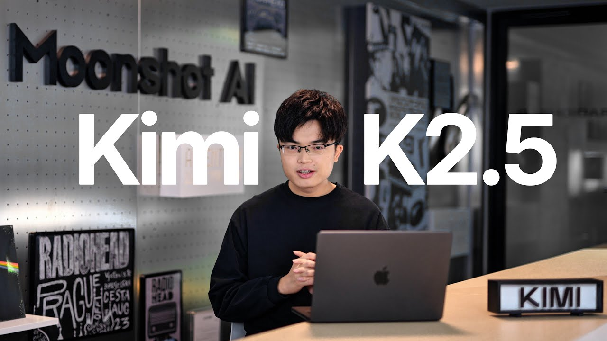

목소리
양즈린 인터뷰
FIELD NOTES

양즈린(杨植麟)은 Moonshot AI(문샷 AI)와 Kimi의 창업자다. 이 페이지는 장샤오쥔의 《商业访谈录》 113화에서 K2, Agentic LLM, 강화학습, 제품과 조직을 약 101분간 논한 중국어 대화를 전체 한국어 번역 전사로 구성한 독립 리더다.
- 러닝타임
- 1:40:59
- 구성
- 06 CHAPTERS
- 한국어 번역 전사
- 2,511 SEGMENTS
전체 요약
- AI 발전은 문제를 해결할수록 새 문제가 나타나는 끝없는 설산을 오르는 과정으로 묘사된다.
- 강한 추론과 외부 세계에 도구로 개입하는 에이전트는 테스트 시점 연산을 확장하는 핵심 경로다.
- Kimi의 연구개발은 사전학습·SFT 중심에서 강화학습·에이전트 중심으로 이동했다.
- K2는 제한된 고품질 데이터에서 더 많이 학습하기 위한 토큰 효율, 옵티마이저와 데이터 활용을 강조한다.
- 에이전트의 주요 과제는 단일 벤치마크 과적합을 넘어서는 일반화, 평가, 환경과 보상 설계다.
- 모델·도구·컨텍스트를 함께 훈련하는 자체 제품과 오픈소스 기반 수직형 에이전트의 가능성을 함께 검토한다.
- 조직 운영과 창업자의 의사결정도 가설·검증, 보상과 자율성의 균형이라는 강화학습의 관점에서 설명된다.
- AI를 지식 창조와 문명의 증폭기로 보면서도 안전, 일자리와 사회 제도의 장기적 전환을 과제로 인정한다.
인터뷰 정보·출처와 방법
- 원제: 和杨植麟时隔1年的对话：K2、Agentic LLM、缸中之脑和“站在无限的开端”
- 인터뷰이: Moonshot AI·Kimi 창업자 양즈린(杨植麟)
- 인터뷰어: 장샤오쥔(张小珺), 《商业访谈录》 113화
- 게시일: 2025년 8월 27일
- 실제 길이: ASR 기준 1:40:59, 원본 메타데이터 1:41:14
- 작성 방법: 원본 중국어 오디오를 Whisper large-v3-turbo로 전사한 뒤 예고편과 중복 도입을 제외한 2,511개 구간을 시간 순서와 타임코드를 보존해 한국어로 번역
전체 한국어 번역 전사
전체 전사를 불러오는 중입니다…
끝없는 설산과 추론·에이전트의 진화
00:00:00
인터뷰와 Kimi K2를 소개한 뒤, AI 발전을 문제를 풀수록 새 문제가 나타나는 ‘끝없는 설산’에 비유한다. AGI를 고정된 종착점보다 지속적인 방향으로 보고, 강한 추론과 외부 도구를 쓰는 다중 턴 에이전트가 테스트 시점 연산을 확장하는 두 방식임을 설명한다.
자체 제품 통합과 K2의 학습 효율
00:16:51
모델 회사가 도구·컨텍스트와 모델을 함께 훈련하는 자체 제품의 이점, 추론·에이전트·혁신·멀티에이전트 조직의 관계를 논한다. 이어 사전학습과 SFT 중심에서 강화학습과 에이전트 중심으로 옮긴 결정, K1.5의 강화학습 검증, K2의 토큰 효율·옵티마이저·데이터 재작성 접근을 설명한다.
에이전트 일반화와 학습 환경 설계
00:33:07
벤치마크나 단일 과제에 과적합되는 에이전트 학습의 한계와 평가 부족을 핵심 병목으로 짚는다. K2에 필요한 장기 기술·인프라·데이터 축적, 뇌와 외부 세계를 잇는 도구로서 코드의 역할, 다양한 과제와 적정 난도를 갖춘 환경 및 커리큘럼 학습의 필요성을 다룬다.
범용 에이전트, 오픈소스와 모델급 제품
00:49:47
코딩을 중요한 하위 집합으로 삼되 범용 에이전트를 지향하며, 도구 일반화·긴 컨텍스트·강화학습 보상 설계의 과제를 살핀다. 오픈소스의 역할과 한계, 모델·도구·컨텍스트를 훈련 단계에서 통합하는 모델급 제품, 멀티모달과 여러 작업을 한 모델에 담는 난제, 모델 능력에 따라 바뀌는 상호작용을 논한다.
사용자 가치와 제품·사업 전략
01:05:18
사용자 피드백의 노이즈와 데이터 플라이휠의 한계를 짚고, 사용자 수요를 평가로 추상화하는 제품의 역할과 API·자체 제품의 사업 가능성을 논한다. 이어 기술 전략의 선택과 실험, K2 후속 포스트트레이닝·멀티모달·일반화·긴 컨텍스트, 자체 제품과 수직형 에이전트의 경계 및 K2 스케일업 경험을 다룬다.
연구와 조직의 강화학습, AI의 의미
01:23:02
더 큰 베이스 모델과 강화학습, 월드 모델과 평가를 통한 일반화 가능성을 논한다. 가설·검증의 연구 방식을 조직 운영에 연결해 SFT식 지시와 RL식 보상, 리워드 해킹 사이의 균형을 설명하고, 창업자의 마음가짐과 AI의 문명적 가치·위험·사회 변화, 회사의 적응과 기술 중심 전략을 돌아본 뒤 짧은 문답으로 마무리한다.